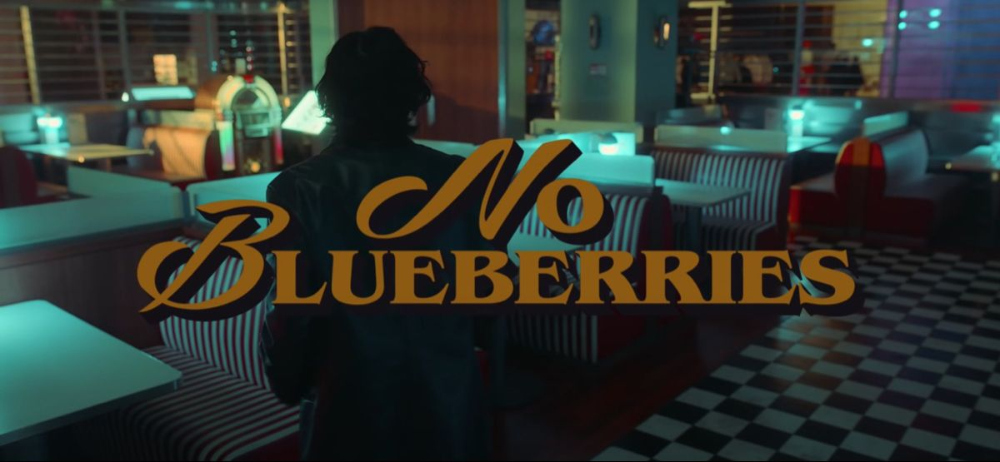
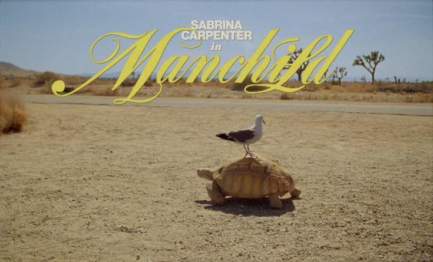
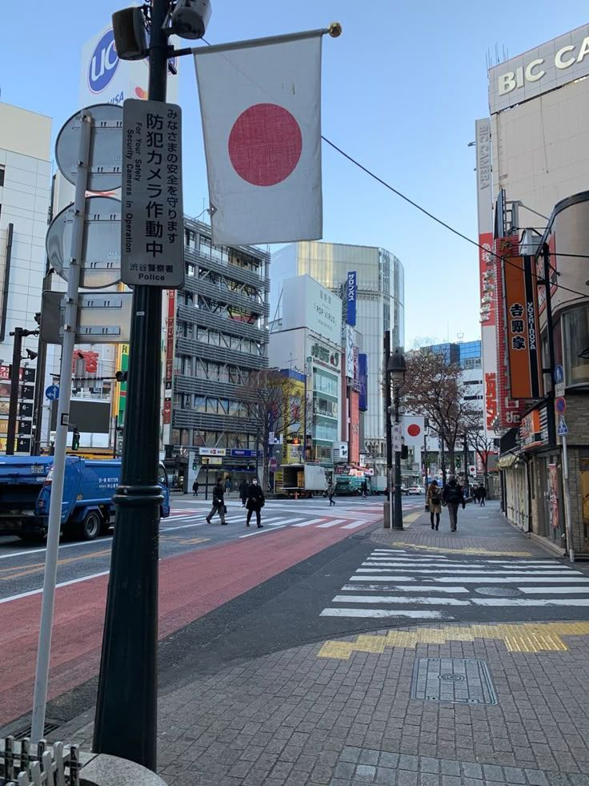
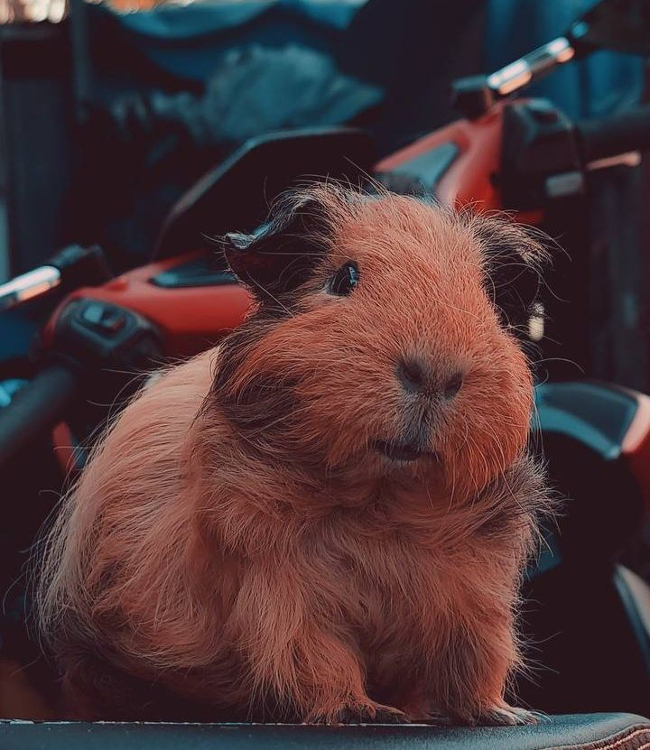
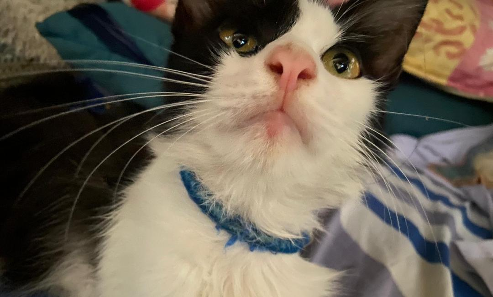

📸 Things I Love 📸
🎨 Color I Love 🎨

I love black color because it is suitable for all colors.
Dark green reminds me of nature and trees.
🎵 Music I Enjoyc 🎵

No Blueberries by DPR IAN, this is my favorite singer.

Manchild by Sabrina Carpenter
🌴 A Place I Love 🌴

Switzerland, best for skiing, hiking, and stunning views.

Japanese people take excellent care of their things.
🐾 Beloved Animal 🐾

This is my guinea pig, Udin. He’s playful and sweet.

This is my cat, Cepet. He loves cuddles!